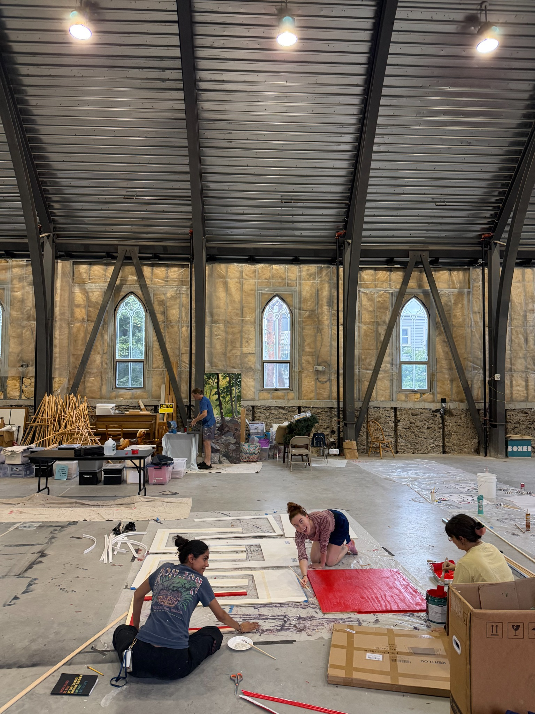
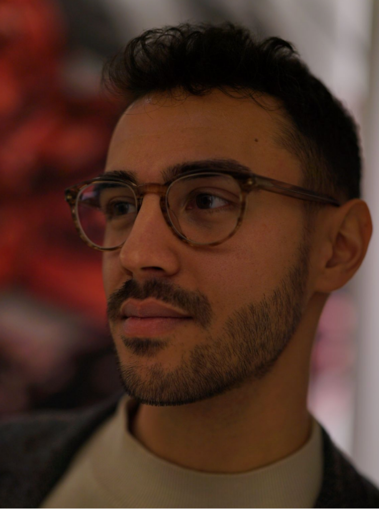
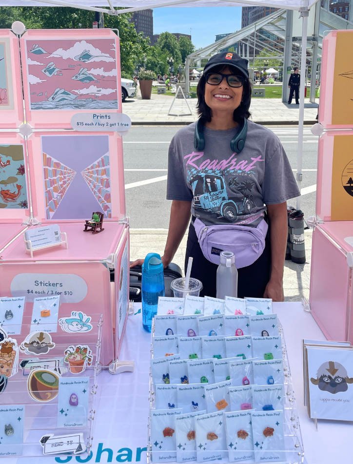

We host events, workshops, listening sessions, and art builds where artists, organizers, and community members can meet, make, and imagine together.
About Creatives for Collective Action
Creatives for Collective Action is a Boston-based collective connecting artists, organizers, justice organizations, cultural spaces, and community members through justice-centered public art.

About the collective
Our Mission
We build creative infrastructure for justice work.
We are a Boston-based creative action collective connecting artists, organizers, and communities in order to bolster existing immigration, climate, and other community-based justice work. We build relationships, host gatherings and workshops, support justice-based art projects, and help local organizations collaborate with artists in ethical, community-centered ways, along with providing resources for public-facing creative works.
We are helping Boston connect its thriving community of artists, organizers, cultural spaces, and community campaigns to each other with the shared goal of collective action. We exist to help build the relationships, shared tools, and gathering spaces that make collaboration easier, more ethical, and more joyful.
Our Theory of Change
Boston has a thriving community of artists, justice organizations, cultural spaces, and community campaigns, but they are often disconnected or siloed. Justice organizations need compelling creative tools to move people, artists need pathways into meaningful and fairly compensated justice work, and communities need art practices that help them gather, grieve, imagine, celebrate, and act.
We build a Boston-based network that connects artists, organizers, and communities through open calls, gatherings, art builds, creative action support, workshops, and paid commissions.
When artists and justice organizations build trust before crisis moments, they can collaborate faster, more ethically, and more beautifully. Art makes campaigns more visible, emotionally resonant, participatory, and accessible.
How We Get There
We support public-facing creative work including banners, signs, zines, printmaking, installations, visual storytelling, social graphics, and other forms of art for collective action.
We help artists find meaningful justice-based projects and help organizers connect with local creatives who can support campaigns, events, and community initiatives.
We are building systems for shared materials, paid commissions, fundraising opportunities, and in-person and online spaces where artists can sell or share work in support of community and justice causes.
Who makes
this possible?
01
Artists & creatives
Join the network, meet collaborators, attend gatherings, share skills, sell or contribute work for community-based fundraisers, and find paid or solidarity-based opportunities to support justice work through art.
02
Organizers & justice organizations
Connect with artists who can help make your work more visible, participatory, emotionally resonant, and accessible.
03
Community members & supporters
Attend events, contribute ideas, offer materials or space, support fundraising projects, and help build a more connected Boston arts and justice ecosystem.
You do not need to be a professional artist to participate. We welcome people who make art professionally, casually, collaboratively, experimentally, culturally, politically, or simply because they care.
What We Are Building
- A collective space for artists, organizers, activists, cultural workers, and community members
- A growing network of creatives interested in justice-based work
- Relationships with Boston-area justice organizations and community groups
- Gatherings, workshops, and art builds
- Public-facing creative projects, including banners, signs, zines, installations, social graphics, visual storytelling, and other forms of art for collective action
- Pathways for paid commissions and creative collaboration
- In-person and online opportunities for artists to sell, share, or contribute work in support of community and justice causes
- Shared material resources and, eventually, a studio space for artists and activists to work together
A future studio
A shared space for artists and activists.
Creatives for Collective Action is working toward a shared studio space where artists, organizers, activists, and community members can gather, create, store materials, and collaborate on justice-centered public art.
Founding Team
Adam Torres

Adam is an arts & culture worker and artist who specializes in performing and visual arts administration. He is currently the Public Art Project Manager at the Rose Kennedy Greenway Conservancy, a freelance composer, performer, and movement artist.
Adam holds a BM from Cornish College of the Arts where he concentrated in interdisciplinary composition. For over a decade he has honed his skills in an array of areas including the performing arts, event and project management, collegiate admissions and recruitment, administrative coordination, and AV tech services.
In addition to his professional pursuits, he has a passion for sustainability, arts activism, and social justice. This diversity of experience and interests brings a unique perspective to all of his work and has been pivotal to his success in each position he's held.
Ari Rosenthal
Ari is an educator, organizer, and researcher. He is a co-founder of the Massachusetts AI Action Network (MAIAN) and is currently working on projects supporting AI regulation, immigrant justice, and Palestinian solidarity movements.
Ari holds a BS in Education from the University of Wisconsin - Madison, where he obtained his teaching license for elementary school special education. He spent four years as a public school teacher before getting his master's at Harvard in education policy and design, where he stayed as a researcher and Teaching Fellow until starting his own advocacy organization, MAIAN. He was also in the circus for a brief period of time as an acrobat!
Sohara Zafar

Sohara is a Boston based artist connected to local art markets, artists, and smaller art events in the area. CCA is a way to help artists meet other artists who are also interested in collective action to collaborate with along with amplifying events specifically to connect social justice initiatives and artists!